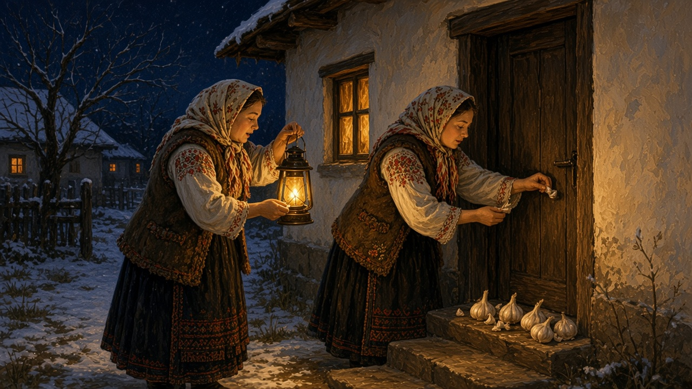
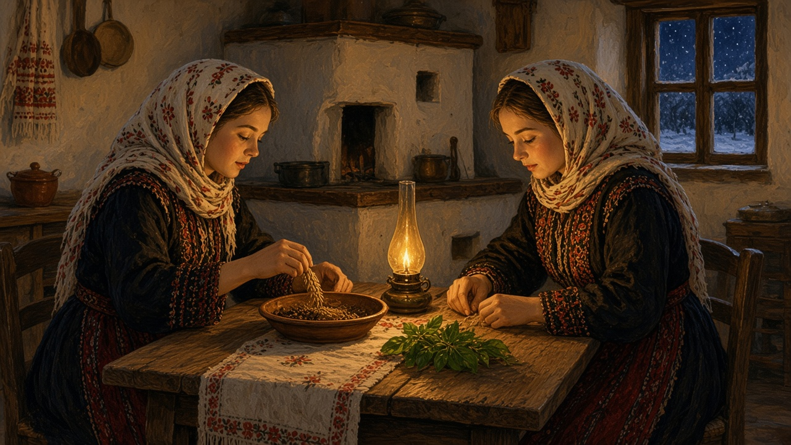

Noaptea Sfântului Andrei
The night of 29 into 30 November. Garlic on the door, wheat in a dish, and in the morning the apostle the country keeps as patron.

The night
The night people mean runs from the twenty-ninth into the thirtieth. The morning is the feast, Sfântul Andrei. The night is the one the house talks about. In many villages it is counted among the strigoi nights — a night when people say the restless dead are out, and the living stay in. Some sats tell it more quietly, and only keep the garlic. This page does not make a list of beings. It names the night, and what is still done at the door before anyone goes to bed.
The feast sits inside the Christmas fast. Postul Crăciunului has usually already started in the middle of November; the year keeps that shape. The date most parishes print is the thirtieth. How the church counts a fixed feast sits on Orthodoxy. The day after the feast, the flag goes on the gate for 1 Decembrie. A few days later, cleaned boots go out for Moș Nicolae, and December brings colinde to the same door. This night is earlier. The lane stays empty. The work is on the wood, not a song.
Garlic on the door
Usturoi. In many villages someone rubs a clove on the door, on the window frames, and over the threshold, the prag. A braid may hang. A few cloves may sit on the sill. People say it keeps the house on a night when the talk is about who should not come in. Kitchens that no longer do it still know the sentence. The door, the window, and the room behind them are ordinary parts of the house. Where a yard still does it, the work is a clove and a threshold in the cold.
How much garlic, and whether the gate gets a rub as well, changes from one sat to the next. This page does not flatten that into one recipe. The point that travels is the rubbing: the door, the window, the stone you step over. A house that still keeps the night will show you the door. Villages remember the piece they kept. The rest stays local talk.
Wheat in a dish
The other work, where girls still do it, is a dish of wheat. Grâu is sown in a farfurie on this night, watered, and left where it can come up. People say you look at it by New Year. A thick green is read as a good year, and often as a sign the girl will marry. A thin sprout gets the other talk. Houses do not all read the dish the same way. This page will not turn a plate of grain into a forecast. It is enough that the dish is still set out, and that someone looks when the year turns.
Basil goes with that night. Busuioc under the pillow — people say you dream the man you might marry. Some put the sprig in a glass by the bed and call it the same custom. The dream is what gets named. The courtship that dream sits inside is on romance. A wedding, if one follows, is another day, on wedding. You do not need the steps written down. The wheat and the pillow are the part that lasted.

The apostle
Andrew is an apostle, the brother of Peter, one of the first called. The Romanian church keeps his feast on 30 November and keeps him as a patron of the country. Tradition here says he passed through Scythia Minor — the old province on the Black Sea, today’s Dobrogea — and preached along that coast. The short church note, and an older icon, sit on Orthodoxy. The water that coast faces is on the sea. The town in the middle of it is the Constanța lesson, which calls the same land Dobruja. This page does not retell a life. It names the link people actually say: the apostle, Dobrogea, the end of November.
Near the village of Ion Corvin, in Constanța county, a cave monastery is kept for that tradition. People say he lived and prayed in the cave. On the feast the road to it fills. You can walk in. A kitchen cannot settle the story from here, and this page will not try. The night at home is still the garlic and the dish.
On the year
After this night the fast is already on. The flag for 1 Decembrie comes the day after the feast. The boots for Moș Nicolae come after that, and the knock after that is colinde. June has Sânziene, another night villages remember differently, with yellow flowers instead of a clove. February has Dragobete, pairing talk, and not a saint’s day. This one is both: a feast in the morning, and a night of garlic, wheat, and whatever the house still does with them. The sheet on the wall already has the name. The question is whether this street still rubs the door.